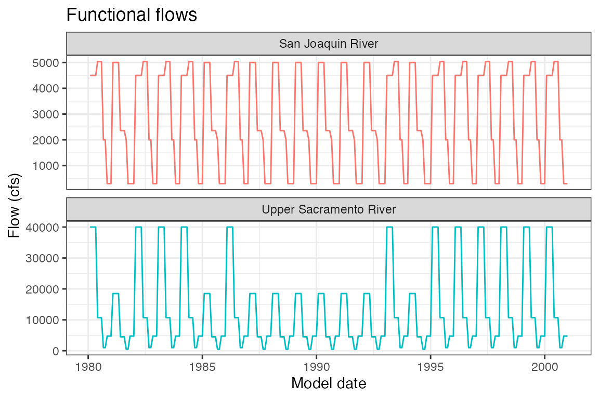

hydrology-actions.RmdThis document provides additional information about how hydrology actions are implemented in the fall run model for Reorienting to Recovery (R2R). For more more information about the model itself, including the codebase, please see our documentation.
The hydrology you select will determine the habitat inputs, as habitat input objects are generated by relating flow to suitable area. For more information, please see the DSMhabitat documentation.
There are 4 hydrology actions that can be implemented in the model. Each has an associated number that is used to build a scenario in the R2Rscenarios package.
22: Use 2019 BiOp hydrology23: Use Functional Flow (FF) hydrology24: Use Healthy Rivers and Landscape (HRL)
hydrology31: Use HRL + FF (dry years) hydrologyIf 22 is selected, all flow inputs to the model will be
from the 2018-2019 Calsim II BiOp run. This is what is used in the
baseline run.
If 23 is selected, the Sacramento and San Joaquin river
mainstem flow objects will use a synthetic hydrograph representing
functional flows (FF) in the system. These hydrographs cover the 20-year
model time series and were generated through rulesets that optimized
salmonid survival based on the model logic. For rulesets, specific
values, and logic, please see the Sacramento
FF documentation and the San
Joaquin FF documentation.

If 24 is selected, the model will use a CalSim3 run (LTO
12a) that incorporates planned Habitat + Spring flow actions, which are
expected in the near future, and proposed as part of the Healthy Rivers
and Landscapes Program. However a scenario that reflects the Healthy
Rivers and Landscapes proposal in full could not be accomplished in time
for the October workshop, and is proposed for a future funding
opportunity. Documenation on this CalSim3 run is available at CEQA.
If 31 is selected, the model will use a hydrology with
the CalSim3 run from 24 as a base, and the FF hydrology
from 23 for the San Joaquin and Sacramento Rivers. This
hydrology implements FF only in model dry years (1982,
1986, 1988-1993, and 1995). Water
year types (Critical, Dry, Below Normal, Above Normal, and Wet) are put
together by the California Department of Water Resources and maintained
on CDEC.
Critical, Dry, and Below Normal years are coded as Dry in the model.
This has not been fully tested with habitat and will be iteratively
improved. The plot below shows what this looks like for the San Joaquin
and Sacramento Rivers; all other tributaries will be the same as flows
from 24.